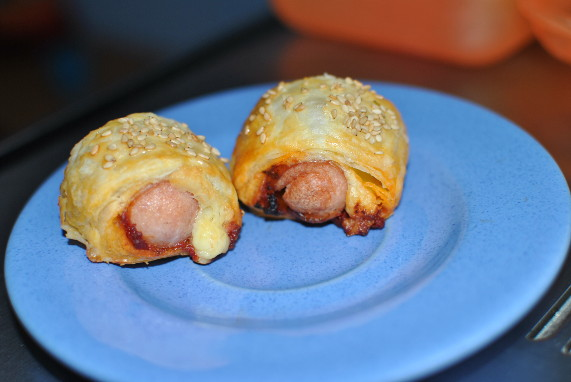

Würstchen im Schlafrock

- Für 4 Personen
- Vorbereitung: 20 Minuten
- Backen: 15 Minuten
Zutaten
- 2 Pck. Blätterteig, backfertig aufgerollt
- 8 Würstchen
- 100 g Gouda, gerieben
- 4 EL Tomatenmark
- 2 Eier
- 2 EL Butter
- 1 EL Kräuter, italienisch, getrocknet
- Sesam nach Belieben
Zubereitung
- Die Butter schmelzen. Mit dem Tomatenmark und den Kräutern vermischen. Die Eier in einer Schüssel verquirlen. Den Blätterteig ausrollen, der Länge nach halbieren. Den Ofen auf 180° Celsius Umluft vorheizen.
- An einer Längskante die Blätterteigstreifen ca. 2 cm breit mit der Tomatenmischung bestreichen. Die restliche Fläche mit dem verquirlten Ei bepinseln. Nun die Würstchen auf die Tomatenfläche legen - bei den klassischen 8-Würstchen-Gläsern
passen 2 mit nur kleinen Teigresten nebeneinander. Käse neben den Würstchen auf den Blätterteig geben. Dabei sollten Würstchen und Käse möglichst eng zusammen sein und wenig von der Fläche einnehmen. Nun den Teig der Länge nach aufrollen,
es dürften am Ende ca. 2 Umdrehungen sein.
- Mit der Naht nach unten legen, mit verquirltem Ei bepinseln und mit Sesamkörnern bestreuen. In etwa 3cm lange Stücke schneiden und auf ein Blech mit Backpapier legen. Im Ofen in ca. 15 Minuten goldbraun backen.
http://www.chefkoch.de/rezepte/2379001377195675/Wuerstchen-im-Schlafrock.html